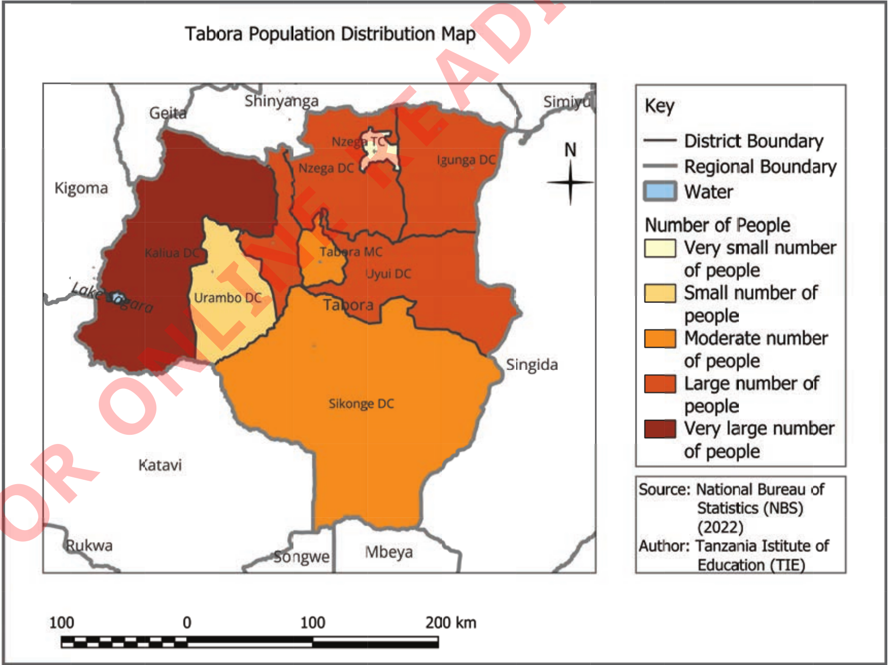

Thematic maps
These maps represent specific and unique themes or information. Thematic maps can vary depending on the theme being presented. For example, thematic maps can represent types of soils, vegetation, crops, human populations, weather, and urban planning.
Population map
This map represents the density or distribution of people in a certain area. Population maps help us see where areas are crowded or not crowded. They are useful for people who make decisions about where to put important things like schools, hospitals, markets, and roads. Figure 4 shows a map of population distribution in Tabora Region.

Figure 4: Population distribution in Tabora Region
Weather maps
These maps represent the distribution of weather in a certain area.